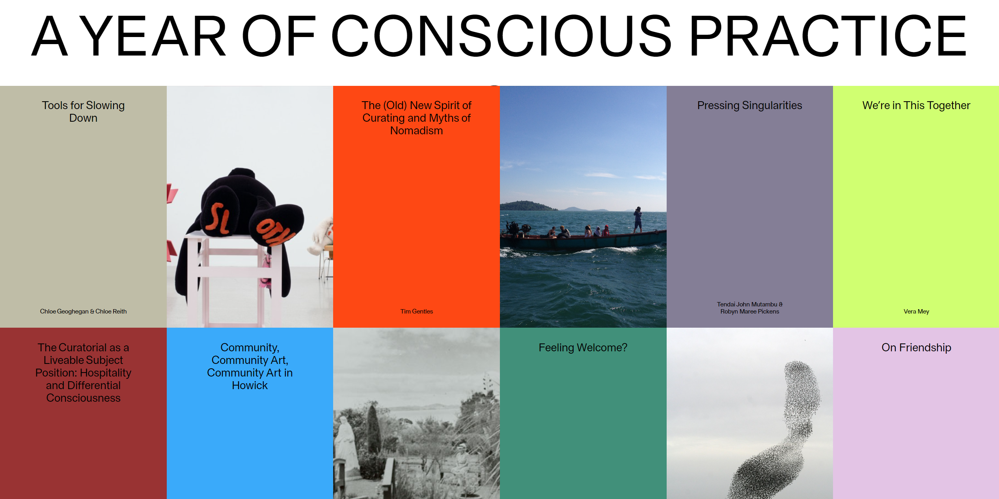

untold stories
PC로 이 사이트에 접속했을 때 보이는 가로 형식의 배치가 새로웠다. 각 페이지의 형태가 신문을 보는 느낌이 났다. 또, 페이지마다 서로 다른 글자 색, 배경색을 사용하여 알록달록해 보였다. 몇몇 페이지들은 주제에 맞게 강렬한 색 대비를 주어 보기 좋았다. 페이지를 클릭했을 때 앞에서 보지 못한 본문을 볼 수 있었고, 상단에 화살표를 통해 이전 페이지와 다음 페이지로 이동할 수 있어 편리했다. 이 페이지에 모바일로 접속했을 때 각 페이지가 휴대전화 너비에 맞춰 세로 정렬로 바뀌어있었다. 또, 상단에 있던 화살표가 화면 중앙으로 이동해 양손으로 들고 조작하기 좋았다.
AAAAN
pc로 페이지에 접속했을 때 녹색 배경에 알록달록한 색상의 작은 페이지들을 볼 수 있다. 내비게이션을 상단에 고정하고 항목마다 체크 박스를 넣어 중복 선택이 가능한 점이 마음에 들었다. 내비게이션에 항목이 많아 어지러운 느낌이 있었지만 접어 숨길 수 있어 좋았다. 또, 페이지마다 접고 펼 수 있게 하여 화면을 깔끔하게 정리해 주어 좋았고, 여는 동안 로딩 중이라는 문구를 넣어 기다리는 동안 심심하지 않았다. pc에서는 여러 페이지가 각자 가로세로 넓이가 다르게 설정되어 있지만, 모바일로 접속했을 때 가로 폭을 휴대전화 너비에 맞춰 보기 편했다.
A YEAR OF CONSCIOUS PRACTICE
pc로 접속했을 때 화면을 가득 채운 직사각형의 페이지가 눈길을 끌었다. 여러 색상의 페이지들과 사이사이 자리한 사진들이 보기 좋았다. 마우스 커서를 페이지에 가져다 대면 페이지가 타원형으로 바뀌어 알아보기 쉬웠다. 페이지로 이동하면 깔끔한 본문이 나오며 스크롤을 내릴수록 왼쪽 상단에 자리한 내비게이션 역할의 구가 페이지의 색깔로 채워지는 게 새로웠다. 구를 클릭하면 다른 페이지로 바로 이동할 수 있는 내비게이션이 나온다. 하지만 내비게이션을 끌 때 다시 맨 위로 올려야 한다는 게 불편했다. 모바일에서 접속했을 때는 이 메뉴를 끄는 아이콘이 화면 상단에 고정되어 있어서 좋았다. 또 각 페이지는 휴대전화 가로 너비에 맞춰 일정한 크기로 세로로 정렬되어 있다. 하지만 pc에서 볼 수 있었던 이미지들이 사라져 아쉬웠다.